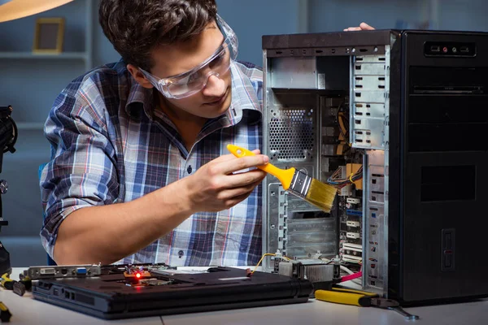

Cuidados essenciais com seu computador
Manter seu PC limpo por dentro e por fora prolonga sua vida útil.
Use ar comprimido para remover poeira acumulada nos coolers e entradas USB.
Evite colocar o computador em locais abafados ou muito úmidos.
Atualize drivers e o sistema operacional com frequência para melhor desempenho.
Tenha um bom antivírus instalado e evite clicar em links suspeitos.
Evite desligar o PC diretamente no botão, pois isso pode corromper arquivos.
Faça backups regulares dos seus dados, especialmente se você trabalha com arquivos importantes.
Monitore a temperatura dos componentes com softwares como HWMonitor ou MSI Afterburner.
Use um estabilizador ou nobreak para proteger contra quedas de energia.
Organize os cabos do gabinete para melhor ventilação e manutenção.